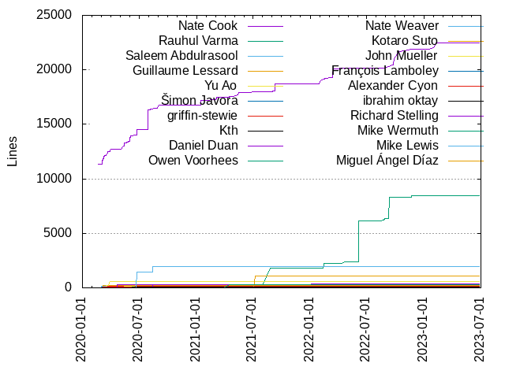
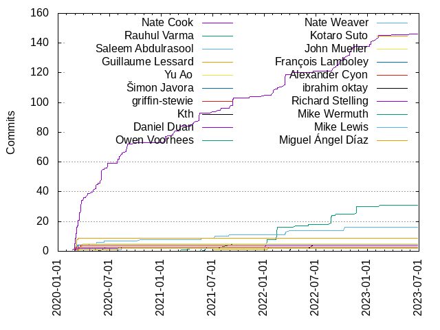

Authors
| Author | Commits (%) | + lines | - lines | First commit | Last commit | Age | Active days | # by commits |
|---|
| Nate Cook | 146 (44.51%) | 22455 | 3901 | 2020-02-20 | 2023-06-28 | 1224 days, 2:21:38 | 100 | 1 |
| Rauhul Varma | 31 (9.45%) | 8452 | 2151 | 2021-05-20 | 2023-02-14 | 635 days, 4:51:23 | 17 | 2 |
| Saleem Abdulrasool | 16 (4.88%) | 320 | 54 | 2020-03-02 | 2022-10-12 | 953 days, 21:54:40 | 14 | 3 |
| Guillaume Lessard | 9 (2.74%) | 245 | 71 | 2020-03-02 | 2020-03-10 | 8 days, 11:10:48 | 4 | 4 |
| Yu Ao | 5 (1.52%) | 599 | 135 | 2020-03-16 | 2020-03-29 | 13 days, 5:16:26 | 4 | 5 |
| Šimon Javora | 4 (1.22%) | 62 | 90 | 2020-03-02 | 2020-03-12 | 10 days, 0:32:03 | 3 | 6 |
| griffin-stewie | 4 (1.22%) | 131 | 12 | 2020-02-29 | 2020-03-22 | 22 days, 2:46:20 | 4 | 7 |
| Kth | 4 (1.22%) | 84 | 9 | 2022-04-02 | 2022-06-23 | 81 days, 21:53:49 | 4 | 8 |
| Daniel Duan | 4 (1.22%) | 379 | 14 | 2020-02-29 | 2022-01-05 | 675 days, 10:05:36 | 4 | 9 |
| Owen Voorhees | 3 (0.91%) | 34 | 5 | 2020-05-11 | 2020-06-16 | 35 days, 23:25:16 | 3 | 10 |
| Nate Weaver | 3 (0.91%) | 105 | 9 | 2020-07-28 | 2020-08-04 | 7 days, 11:12:08 | 3 | 11 |
| Kotaro Suto | 3 (0.91%) | 1082 | 10 | 2021-07-07 | 2022-01-18 | 195 days, 9:56:29 | 3 | 12 |
| John Mueller | 3 (0.91%) | 311 | 43 | 2020-05-14 | 2020-06-22 | 39 days, 4:45:12 | 2 | 13 |
| François Lamboley | 3 (0.91%) | 10 | 12 | 2021-06-04 | 2021-06-10 | 6 days, 1:13:14 | 2 | 14 |
| Alexander Cyon | 3 (0.91%) | 54 | 12 | 2020-02-28 | 2020-03-06 | 7 days, 3:56:05 | 2 | 15 |
| ibrahim oktay | 2 (0.61%) | 104 | 24 | 2020-05-27 | 2020-06-09 | 13 days, 0:08:19 | 2 | 16 |
| Richard Stelling | 2 (0.61%) | 270 | 25 | 2020-04-21 | 2020-04-21 | 0:00:12 | 1 | 17 |
| Mike Wermuth | 2 (0.61%) | 299 | 20 | 2021-03-11 | 2021-04-14 | 34 days, 0:00:12 | 2 | 18 |
| Mike Lewis | 2 (0.61%) | 1939 | 759 | 2020-06-22 | 2020-08-14 | 52 days, 15:47:16 | 2 | 19 |
| Miguel Ángel Díaz | 2 (0.61%) | 8 | 2 | 2020-03-13 | 2020-07-31 | 140 days, 2:30:14 | 2 | 20 |
These didn't make it to the top: Miguel A. Perez Ojito, Max Desiatov, Kenny, Keith Smiley, Ian, Federico Zanetello, Elliott Williams, Brad Larson, Alfredo Delli Bovi, Aleksey Mashanov, Adam Sharp, Adam McNight, yonihemi, matsuji, konomae, buttaface, Zsolt Kiraly, Yim Lee, Yi Xie, Wildchild9, Tony Allevato, Todd Thomas, Tiago Lopes, Thomas Van Lenten, Stuart Carnie, Sergey Petrachkov, Robert Widmann, Rob Russo, Olivier Halligon, Niccolò Fontana, Md Abir Hasan Zoha, Max, Matt Zanchelli, Martin Pfundmair, Marco Eidinger, Luciano Almeida, Kyle Macomber, Klaas Pieter Annema, Kenta Kubo, Kenny York, Karoy Lorentey, Jonathan Penn, Johannes G, Jake Petroules, Ingmar Stein, Ian Saultz, Iain Smith, Gwynne Raskind, Gwen Mittertreiner, Gonzalo RH, Erica Sadun, Drew McCormack, David Rönnqvist, David Peterson, Daniel Müllenborn, CypherPoet, Craig Siemens, Clay Ellis, Brandon Evans, Ashkan Ebtekari, Artem Novichkov, Adam, Aaron Gyes, @Lantua, 3405691582
Only top 20 authors shown
Only top 20 authors shown
| Month | Author | Commits (%) | Next top 5 | Number of authors |
|---|
| 2023-06 | Nate Cook | 1 (50.00% of 2) | Max Desiatov | 2 |
| 2023-02 | Nate Cook | 3 (60.00% of 5) | Rauhul Varma, Gwynne Raskind | 3 |
| 2023-01 | Nate Cook | 4 (57.14% of 7) | matsuji, Yim Lee, Tiago Lopes | 4 |
| 2022-12 | Ashkan Ebtekari | 1 (100.00% of 1) | | 1 |
| 2022-11 | Rauhul Varma | 5 (41.67% of 12) | Nate Cook, Rob Russo, Kenta Kubo | 4 |
| 2022-10 | Nate Cook | 5 (55.56% of 9) | Saleem Abdulrasool, David Rönnqvist, Clay Ellis | 4 |
| 2022-09 | Nate Cook | 6 (66.67% of 9) | Tony Allevato, Rauhul Varma, David Peterson | 4 |
| 2022-08 | Rauhul Varma | 6 (66.67% of 9) | Nate Cook, Marco Eidinger, Ian | 4 |
| 2022-06 | Kth | 2 (40.00% of 5) | Rauhul Varma, Nate Cook, Luciano Almeida | 4 |
| 2022-05 | konomae | 1 (50.00% of 2) | Keith Smiley | 2 |
| 2022-04 | Kth | 2 (50.00% of 4) | Rauhul Varma, Nate Cook | 3 |
| 2022-03 | Nate Cook | 9 (69.23% of 13) | Saleem Abdulrasool, Martin Pfundmair | 3 |
| 2022-02 | Rauhul Varma | 8 (66.67% of 12) | Nate Cook, Zsolt Kiraly, Keith Smiley | 4 |
| 2022-01 | Nate Cook | 4 (26.67% of 15) | Rauhul Varma, Kotaro Suto, Adam McNight, yonihemi, Matt Zanchelli | 8 |
| 2021-12 | Ian Saultz | 1 (33.33% of 3) | Craig Siemens, Aaron Gyes | 3 |
| 2021-11 | Nate Cook | 1 (50.00% of 2) | Jake Petroules | 2 |
| 2021-09 | Nate Cook | 7 (77.78% of 9) | Yi Xie, Rauhul Varma | 3 |
| 2021-08 | Saleem Abdulrasool | 1 (50.00% of 2) | Rauhul Varma | 2 |
| 2021-07 | Nate Cook | 3 (50.00% of 6) | Saleem Abdulrasool, Rauhul Varma, Kotaro Suto | 4 |
| 2021-06 | François Lamboley | 3 (60.00% of 5) | Ian, Gonzalo RH | 3 |
| 2021-05 | Nate Cook | 6 (66.67% of 9) | Rauhul Varma, Saleem Abdulrasool | 3 |
| 2021-04 | Nate Cook | 3 (50.00% of 6) | Miguel A. Perez Ojito, Mike Wermuth | 3 |
| 2021-03 | Nate Cook | 3 (33.33% of 9) | Alfredo Delli Bovi, Robert Widmann, Mike Wermuth, Kyle Macomber, 3405691582 | 6 |
| 2021-02 | Nate Cook | 4 (66.67% of 6) | Kenny, Karoy Lorentey | 3 |
| 2021-01 | Nate Cook | 4 (66.67% of 6) | Md Abir Hasan Zoha, Drew McCormack | 3 |
| 2020-12 | Max Desiatov | 1 (100.00% of 1) | | 1 |
| 2020-11 | Sergey Petrachkov | 1 (50.00% of 2) | Daniel Müllenborn | 2 |
| 2020-10 | Saleem Abdulrasool | 1 (33.33% of 3) | Johannes G, CypherPoet | 3 |
| 2020-09 | Nate Cook | 5 (71.43% of 7) | Gwen Mittertreiner, Elliott Williams | 3 |
| 2020-08 | Nate Cook | 6 (50.00% of 12) | Thomas Van Lenten, Stuart Carnie, Nate Weaver, Mike Lewis, Daniel Duan | 7 |
| 2020-07 | Nate Cook | 3 (37.50% of 8) | Nate Weaver, Adam Sharp, Miguel Ángel Díaz | 4 |
| 2020-06 | Nate Cook | 12 (54.55% of 22) | Brad Larson, ibrahim oktay, Saleem Abdulrasool, Owen Voorhees, Niccolò Fontana | 10 |
| 2020-05 | Nate Cook | 8 (47.06% of 17) | Owen Voorhees, John Mueller, Aleksey Mashanov, ibrahim oktay, Saleem Abdulrasool | 7 |
| 2020-04 | Nate Cook | 3 (33.33% of 9) | Richard Stelling, Todd Thomas, Saleem Abdulrasool, Max, Kenny York | 6 |
| 2020-03 | Nate Cook | 29 (45.31% of 64) | Guillaume Lessard, Yu Ao, Šimon Javora, Saleem Abdulrasool, griffin-stewie | 16 |
| 2020-02 | Nate Cook | 7 (46.67% of 15) | Federico Zanetello, Alexander Cyon, griffin-stewie, buttaface, Olivier Halligon | 7 |
| Year | Author | Commits (%) | Next top 5 | Number of authors |
|---|
| 2023 | Nate Cook | 8 (57.14% of 14) | matsuji, Yim Lee, Tiago Lopes, Rauhul Varma, Max Desiatov | 7 |
| 2022 | Nate Cook | 34 (37.36% of 91) | Rauhul Varma, Saleem Abdulrasool, Kth, Kotaro Suto, Keith Smiley | 24 |
| 2021 | Nate Cook | 31 (49.21% of 63) | Rauhul Varma, Saleem Abdulrasool, François Lamboley, Mike Wermuth, Miguel A. Perez Ojito | 22 |
| 2020 | Nate Cook | 73 (45.62% of 160) | Guillaume Lessard, Saleem Abdulrasool, Yu Ao, Šimon Javora, griffin-stewie | 44 |
| Domains | Total (%) |
|---|
| apple.com | 148 (45.12%) |
|---|
| users.noreply.github.com | 69 (21.04%) |
|---|
| gmail.com | 42 (12.80%) |
|---|
| compnerd.org | 16 (4.88%) |
|---|
| me.com | 6 (1.83%) |
|---|
| outlook.com | 5 (1.52%) |
|---|
| google.com | 4 (1.22%) |
|---|
| duan.ca | 4 (1.22%) |
|---|
| mcnight.fr | 3 (0.91%) |
|---|
| derailer.org | 3 (0.91%) |
|---|